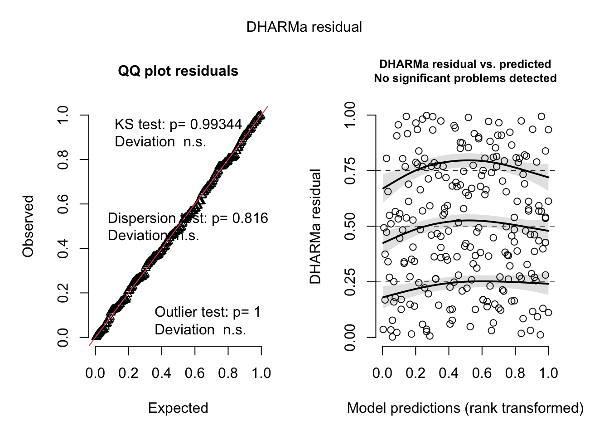

library(tidyverse)
library(here)
library(gt)
library(janitor)
library(knitr)
library(rmarkdown)
library(lubridate)
library(dplyr)
library(tibble)
library(DHARMa)
library(MuMIn)
library(broom)
library(ggeffects)
library(scales)
sst <- read_csv(
here("data", "SST_update2023.csv")) # creating object for sst data
nest_boxes <- read_csv(
here("data", "occdist.csv")) # creating object for nest data final_TEMPLATE
Setup
Problem 1. Research writing
a.
In part 1, they used a Pearson’s r correlation test. In part 2, they used a one-way ANOVA test.
b.
I believe their Pearson’s r test should have included both a correlation coefficient and a 95% confidence interval. The addition of the correlation coefficient would be useful because it helps the reader understand and quantify the relationship between the two variables by telling the strength and direction of a linear relationship. The 95% CI would be useful because it provides a range of plausible values for the true correlation coefficient for example, a narrow CI indicates a precise estimate while a wide CI suggests uncertainty. This is important because it indicates how precisely the sample correlation coefficient estimates the variables correlation, and it can be used to assess the statistical significance of the correlation. Since the p-value in this example is 0.03 this confirms the results are statistically significant at the 0.05 level. Even though the correlation is statistically significant, the confidence interval could indicate that the true strength of the relationship is still somewhat uncertain.
c.
We found a statistically significant positive correlation between distance from headwater (km) and annual total nitrogen load (kg year⁻¹), indicating that nitrogen load tends to change downstream. We rejected the null hypothesis of no correlation (Pearson’s correlation, r(test statistic) = correlation coefficient, p = 0.03, α = significance level). This suggests that nitrogen levels are different downstream, 95% CI: [lower bound, upper bound] kg year⁻¹.
We found a significant difference (η² = effect size) in mean nitrogen load between urban land (n = sample size), atmospheric deposition (n = sample size), fertilizer (n = sample size), wastewater treatment (n = sample size), and grasslands (n = sample size) (One-way ANOVA, F(degrees of freedom) = F-value, p = 0.02, α = significance level). On average, nitrogen load (kg year⁻¹) from urban land, atmospheric deposition, fertilizer, wastewater treatment, and grasslands were all different, 95% CI: [lower bound, upper bound] kg year⁻¹.
Problem 2. Data Visualization
a.
sst_clean <- sst |> # creating new clean object from "sst"
clean_names() |> # clean column names
mutate( # changes to data frame
year = year(date), # isolates year from date
month = month(date), # isolates month from date
month = month.abb[month]) |> # renames month number to month name
group_by(year, # group by year
month) |> # group by month
summarise(temp = mean(temp, # takes mean temp by each month per year
na.rm = TRUE), # convert character month to ordered factor
.groups = "drop") |> # ungroups the data post-summary
select(year, # isolates year
month, # isolates month
mean_monthly_sst = temp) |> # isolates temp and renames to "mean_monthly_sst"
filter(year %in% c(2018:2023)) |> # filter years from 2018-2023
mutate( # changes data frame
year = factor(year, # converts year to categorical variable
levels = as.character(2018:2023)), # orders years
month = factor(month, # converts month to categorical variable
levels = month.abb, # sets Jan–Dec order
ordered = TRUE)) # makes it an ordered factor
slice_sample(sst_clean, n = 5) # randomly displays 5 rows from "sst_clean"# A tibble: 5 × 3
year month mean_monthly_sst
<fct> <ord> <dbl>
1 2020 Nov 15.5
2 2021 Jun 15.9
3 2020 Jun 15.9
4 2020 Jul 17.0
5 2018 Apr 12.8str(sst_clean) # compact summary of the structure of "sst_clean"tibble [72 × 3] (S3: tbl_df/tbl/data.frame)
$ year : Factor w/ 6 levels "2018","2019",..: 1 1 1 1 1 1 1 1 1 1 ...
$ month : Ord.factor w/ 12 levels "Jan"<"Feb"<"Mar"<..: 4 8 12 2 1 7 6 3 5 11 ...
$ mean_monthly_sst: num [1:72] 12.8 19.6 15.6 14.3 15 ...b.
ggplot(data = sst_clean, # uses sst_clean data frame
aes(x = month, # makes x-axis
y = mean_monthly_sst, # makes y-axis
color = as.numeric(as.character(year)), # allows scale color gradient to work with a factor
group = year)) + # groups points by year
geom_point() + # adds data points
geom_line() + # adds a line connecting the years
scale_color_gradient( # orders years from lightest to darkest in order from oldest to recent
low = "chartreuse", # year 2018
high = "darkgreen", # year 2023
name = "Year", # legend title
breaks = 2018:2023, # ensures all years are shown properly in the legend
labels = 2018:2023, # ensures all years are labeled properly in the legend
guide = guide_colorbar(reverse = TRUE)) + # reverses the legend 2018 at top, 2023 at bottom
labs( # labels
x = "Month", # x-axis label
y = "Mean monthly sea surface temperature (°C)", # y-axis label
color = "Year") + # color coded by year
guides(color = guide_legend(override.aes = list(shape = 16))) + # makes legend data point shape a closed circle with a horizontal line
theme_bw() + # theme
theme(panel.grid = element_blank(), # removes grid
legend.position = c(0.1, 0.75), # puts legend inside panel on top left
axis.title.x = element_text(size = 13), # makes x-axis title font bigger
axis.title.y.left = element_text(size = 13)) # makes y-axis font biggerProblem 3: Data analysis
a.
The 1s say that a bird occupied the nest box and the 0s say that a bird did not occupy the nest box. For example, if a 1 is in the sp column then a swift parrot occupied the nest box, but if a 0 is in the sp column then a swift parrot did not occupy the nest box.
b.
The main difference is that Swift Parrots are the target species for which the nest boxes were installed, whereas Common Starlings and Tree Martins are competitor species that opportunistically occupy the boxes. The Swift Parrot is critically endangered and dependent on suitable nesting habitats, while the competitors are more adaptable and may outcompete the parrots for the artificial nesting sites.
c.
The two seasons in the study are the 2018–2019 and 2019–2020 breeding seasons. They differ in that Swift Parrots were present in the study area during 2018–2019 but absent in 2019–2020, allowing the authors to compare nest box use with and without the presence of the target species.
d.
| Model number | Season | Distance to forest edge | Model description |
|---|---|---|---|
| 1 | no predictors (null model) | ||
| 2 | X | X | includes both season and distance (saturated model) |
| 3 | X | season | |
| 4 | X | distance |
e.
f.
plot( # plotting null residuals
simulateResiduals(model1)) # simulating residuals 
plot( # plotting saturated residuals
simulateResiduals(model2)) # simulating residuals 
plot( # plotting season residuals
simulateResiduals(model3)) # simulating residuals 
plot( # plotting edge_distance residuals
simulateResiduals(model4)) # simulating residuals 
g.
AICc(model1,
model2, # best model: season and edge distance
model3,
model4) |>
arrange(AICc) # arranging output in descending order of AIC df AICc
model2 3 226.3133
model4 2 229.6716
model3 2 236.3744
model1 1 238.8318The best model that predicts swift parrot nest box occupancy includes season and edge distance as determined by Akaike’s Information Criterion (AIC).
h.
mod_nest <- ggpredict(model2, # generating predicted probabilities and confidence intervals from "model2"
terms = c("edge_distance [all]", "season"))|> # full range of "edge_distance" for each season
rename(season = group) # renaming "group" column to "season"
ggplot(nest_boxes_clean, # making plot from "nest_boxes_clean"
aes(x = edge_distance, # x-axis
y = sp, # y-axis
color = season)) + # color by season
geom_point(alpha = 0.4, # transparent data points
size = 2) + # data point size
geom_ribbon(data = mod_nest, # adding shaded confidence interval ribbons
aes(x = x, # x-values
ymin = conf.low, # lower confidence interval bounds
ymax = conf.high, # upper confidence interval bounds
fill = season), # fill color by season
inherit.aes = FALSE, # do not inherit global aesthetics
alpha = 0.3, # transparent for ribbons
color = NA) + # removing border around ribbons
geom_line(data = mod_nest, # adding predicted probability lines
aes(x = x, # x-value
y = predicted, # predicted probability from model
color = season), # line color by season
inherit.aes = FALSE, # do not inherit global aesthetics
size = 0.5) + # line thickness
scale_color_manual(values = c("2016" = "red", # coloring "2016" points and lines red
"2019" = "blue")) + # coloring "2019" points and lines blue
scale_fill_manual(values = c("2016" = "red3", # coloring "2016" ribbon red
"2019" = "blue3")) + # coloring "2019" ribbon blue
scale_y_continuous(labels = scales::label_percent(accuracy = 1), # y-axis labels as percentages with 1% accuracy
limits = c(0, 1)) + # y-axis range 0 to 1 (0% to 100%)
labs(x = "Distance to Forest Edge (m)", # label x-axis
y = "Probability of Swift Parrot Box Occupancy (%)", # label y-axis
color = "Season", # legend title for color
fill = "Season", # legend title for color
title = "Likelihood of Swift Parrot Occupying a Nest Box by Distances of Forests Edge and Season") + # figure title
theme_minimal() + # theme
theme(panel.grid = element_blank(), # remove grid lines
axis.line = element_line(color = "black")) # add axis lines i.
Figure 1. Prediction and 95% confidence intervals from the best models of Swift Parrot box occupancy as a function of distance to forest edge and season. The lines represent predicted probabilities of Swift Parrot box nest occupancy, while the shaded ribbons indicate the 95% confidence intervals. Colored points show observed data, with red and blue representing different seasons. Data and interpretation adapted from Stojanovic et al. (2021). “Do nest boxes breed the target species or its competitors? A case study of a critically endangered bird.” (https://doi.org/10.1111/rec.13319).
j.
pred_probs <- ggpredict( # calculating predicted probabilities
model2, # using model 2
terms = c("edge_distance [0,900]", "season")) # specifying edge distances and season
print(pred_probs) # print the prediction table# Predicted probabilities of sp
season: 2016
edge_distance | Predicted | 95% CI
--------------------------------------
0 | 0.48 | 0.33, 0.64
900 | 0.12 | 0.06, 0.24
season: 2019
edge_distance | Predicted | 95% CI
--------------------------------------
0 | 0.30 | 0.18, 0.44
900 | 0.06 | 0.03, 0.13k.
The results indicate that Swift Parrots are more likely to occupy nest boxes that are closer to the forest edge as seen in figure 1 in part h. According to the predictions calculated in part j, the probability of occupancy at 0 m from the forest edge was higher in both seasons approximately 48% in 2016 and 30% in 2019 compared to only 12% and 6% at 900 m. This suggests a strong negative relationship between distance from the forest edge and Swift Parrot occupancy probability. Biologically, the noticeable decline of occupancy at 0 m from 2016 and 2019 is likely due to the fact Swift Parrots rarely breed in the same location in successive years, leaving permanently deployed nest boxes available for non target species (Stojanovic et al. (2021). Additionally, the relationship between distance from the forest edge and probability of Swift Parrots occupying a nest box is likely because Swift Parrots naturally nest near forest edges, while other species occupy nest boxes far from the forest edges.
Problem 4. Affective and exploratory visualizations
a.
My visualization from homework 2 was a scatter plot with different points representing steps recorded at work, colored by type of work shift with two lines connecting the points. My visualization from homework 3 was a jitter plot grouped into 2 plots based on work shift type with each data point representing total steps in a worked shift. It also included an average for both groups with 95% CI. Between all my visualizations I noticed I represented each data entry as a data point and color coded by type of work shift. I noticed I took more mean steps during a morning shift compared to all other shift types. I also noticed I had more outdoor helm hours during my morning shifts compared to my other shifts which likely contributed to me taking more mean steps during morning shifts. In the early stages of my visualization it was difficult to see a difference between my step counts likely because I did not have enough data. However, the difference became more apparent in my final visualization since I had enough data points to express a difference in means. I was given feedback on changing my data point shapes to make them easier to see. I was also given the suggestion to color each group based on colors in the day for example, orange for a morning shift to depict the sunrise, and blue or purple to depict the afternoon or night to represent my other shifts. I decided to keep both suggestions since I agreed with making my data points more visible and I thought it was a cool idea to express the type of shift by the color of the time of day.